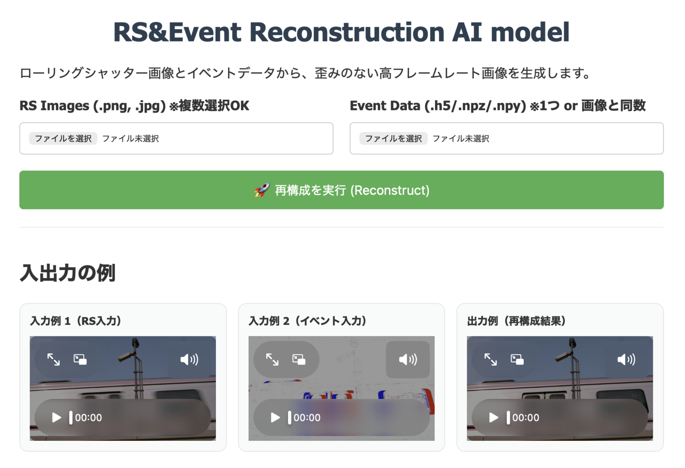
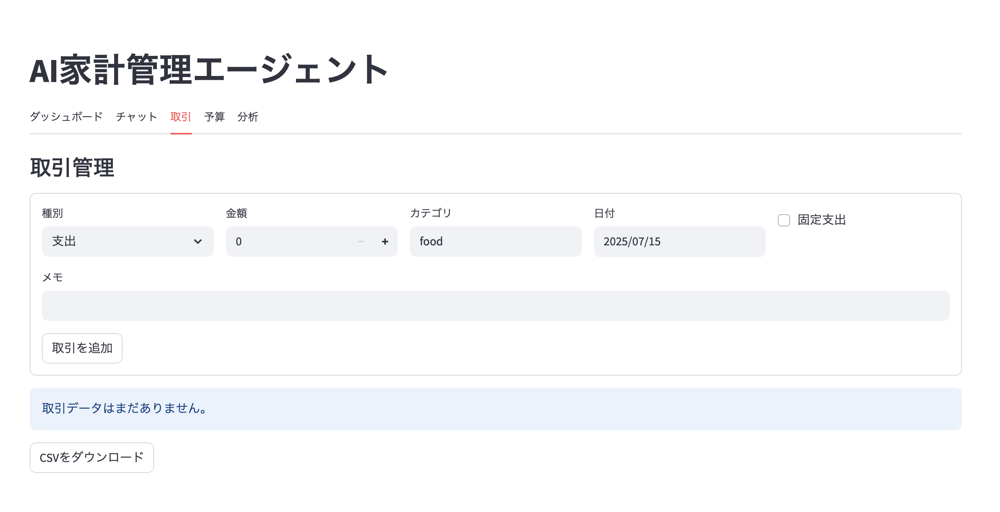
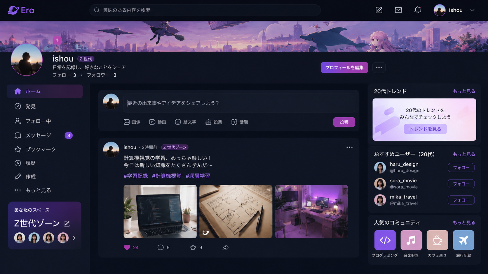

TOEFL108点・N1を取った僕の外国語勉強法
AI・コンピュータビジョン研究者の立場から、AI時代に外国語を学ぶ意味と、 単語・Reading・Listening・Speaking・Writingの勉強法を紹介します。
noteで読む胡 煒翔 | 慶應義塾大学 青木研究室 M1 | AI・CV 研究者 / AIエンジニア
慶應義塾大学大学院 理工学研究科 総合デザイン工学専攻 電気情報工学 青木研究室に所属しています。深層学習ベースのコンピュータビジョンを専門とし、特に画像復元、動画生成、3D再構成、イベントカメラの研究とAI開発に従事しています。




AI・コンピュータビジョン研究者の立場から、AI時代に外国語を学ぶ意味と、 単語・Reading・Listening・Speaking・Writingの勉強法を紹介します。
noteで読む